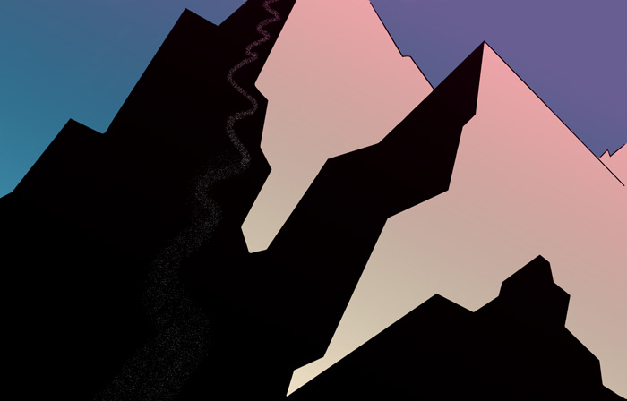

"Alpenglow Skiing"
Digital Artwork
Photoshop Class Project
My intention with this project was to get the feel of the light in the mountains at sunset when skiing. The way the intense rose and gold colors on the land and in the sky create a beautiful gradient, and then the color of the sky furthest from the setting sun remaining a bright clear blue.